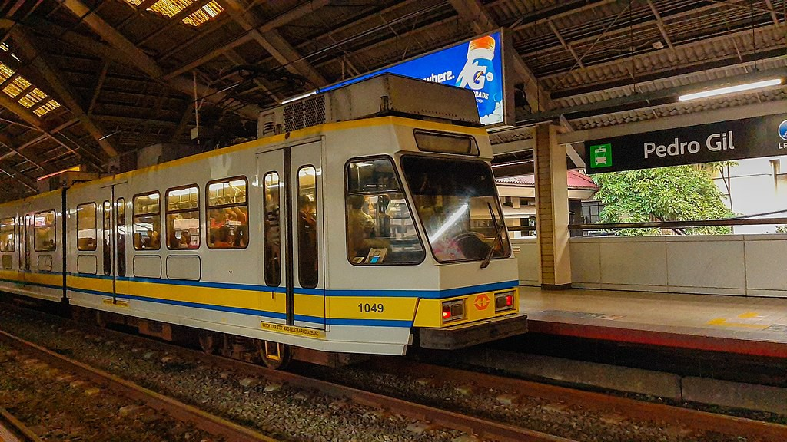
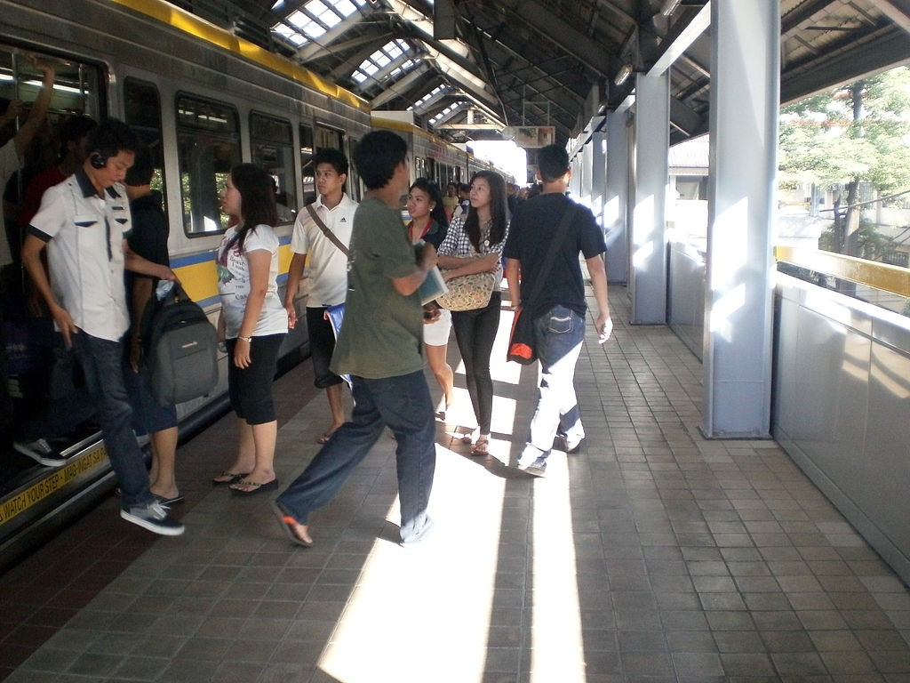

Pedro Gil
LRT-1 station
Pedro Gil station (sometimes called Herran station) is an elevated Manila Light Rail Transit (LRT) station situated on Line 1. The station serves Ermita in Manila and is located at the corner of Taft Avenue and Pedro Gil Street. The station takes its name from Pedro Gil Street, which is used to be named Herran Street.
Pedro Gil station is the seventh station for trains headed to Fernando Poe Jr. and the fourteenth station for trains headed to Baclaran.
Landmarks near the station include the Philippine General Hospital, the University of the Philippines Manila, Philippine Christian University, Philippine Women's University, Robinsons Manila, and St. Paul University Manila.
| Pedro Gil | |||||||
|---|---|---|---|---|---|---|---|
|  | |||||||
| General information | |||||||
| Location | Taft Avenue, Ermita, Manila, Metro Manila, Philippines | ||||||
| Owned by | Department of Transportation Light Rail Transit Authority |
||||||
| Operated by | Light Rail Manila Corporation | ||||||
| Line(s) | Line 1 | ||||||
| Platforms | 2 (2 side) | ||||||
| Tracks | 2 | ||||||
| Construction | |||||||
| Structure type | Elevated | ||||||
| Other information | |||||||
| Station code | PG | ||||||
| History | |||||||
| Opened | December 1, 1984 | ||||||
| Services | |||||||
|
|||||||
Pedro Gil station is the seventh station for trains headed to Fernando Poe Jr. and the fourteenth station for trains headed to Baclaran.
Landmarks near the station include the Philippine General Hospital, the University of the Philippines Manila, Philippine Christian University, Philippine Women's University, Robinsons Manila, and St. Paul University Manila.
Pedro Gil station is well-served by taxis, jeepneys, buses, and UV Express that ply the Taft Avenue route and nearby routes. Taxis and jeepneys stop near the station and can be used to transport commuters to and from Ermita.

The Station at daytime

Passengers alighting from a train
| Existing stations | |
|---|---|
|
Baclaran
EDSA Libertad Gil Puyat Vito Cruz Quirino Pedro Gil United Nations Central Carriedo |
Doroteo Jose
Bambang Tayuman Blumentritt Abad Santos R. Papa 5th Avenue Monumento Balintawak Fernando Poe Jr. |
| Under construction | |
|
Redemptorist
MIA Asia World Ninoy Aquino |
Dr. Santos
Las Piñas Zapote Niog |
| North Triangle | |